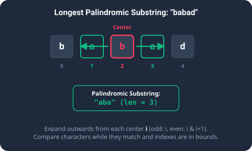

Introduction & Problem Explanation
The Longest Palindromic Substring problem requires us to find the longest contiguous sequence of characters in a string that reads the same forwards and backwards.
For example, in the string s = "babad", the longest palindromic substring is either "bab" or "aba", both of length 3. In s = "cbbd", the longest palindromic substring is "bb" of length 2. Finding symmetric structures inside larger sequences is important in bioinformatics (e.g., DNA sequencing and folding patterns) and compilers.

Imagine walking down a path lined with letter blocks. You want to find the longest mirrored section of blocks. To do this, you stop at each block (and also in the gaps between blocks) and act as a reflection center. You stretch your left arm to the left and your right arm to the right, looking at the letter blocks under your hands. As long as the two blocks you are touching match, you stretch further out. The moment there is a mismatch, you stop and measure the distance between your hands. The maximum span you achieve during this walk represents the longest palindromic segment!
The Algorithmic Approach
1. The Brute Force Approach (O(n³))
We check every possible substring in the string, verify if it is a palindrome, and track the longest. With O(n²) substrings and O(n) verification time per substring, the total time complexity is a highly inefficient O(n³).
2. Expand Around Center Approach (O(n²) Time, O(1) Space)
Instead of checking substrings from the outside in, we can start from every potential palindrome center and expand outwards. A string of length n has 2n - 1 potential centers (each of the n characters, and each of the n - 1 spaces between adjacent characters). For each center, we expand as long as the left and right characters match. This reduces the time complexity to O(n²) while using no extra storage space, which is optimal for a simple array traversal.
Step-by-Step Execution Walkthrough
Let's trace the Expand Around Center algorithm on the string s = "babad":
- Step 1 (Initialization): We initialize two pointers to track the start and end of our longest palindrome:
start = 0,end = 0. - Step 2 (Index i = 0, Character 'b'):
- Odd expansion (center at
i = 0, j = 0): Matches'b'. Out of bounds immediately. Length =1. - Even expansion (center between index
0and1): Left is'b', right is'a'(mismatch). Length =0. - Max length =
1. Pointers stay:start = 0, end = 0.
- Odd expansion (center at
- Step 3 (Index i = 1, Character 'a'):
- Odd expansion (center at
i = 1, j = 1): Matches'a'. Expand outwards: left index0 ('b')matches right index2 ('b'). Expand outwards: out of bounds. Length =3(substring"bab"). - Even expansion (center between index
1and2): Left is'a', right is'b'(mismatch). Length =0. - Max length is
3. Since3 > (end - start + 1), we update:start = 1 - (3 - 1)/2 = 0,end = 1 + 3/2 = 2. Substring is"bab".
- Odd expansion (center at
- Step 4 (Index i = 2, Character 'b'):
- Odd expansion (center at
i = 2, j = 2): Matches'b'. Expand: left index1 ('a')matches right index3 ('a'). Substring"aba". Expand: left index0 ('b')mismatches right index4 ('d'). Length =3. - Even expansion (center between index
2and3): Left is'b', right is'a'(mismatch). Length =0. - Max length is
3, which is not larger than our current max3. Pointers remain:start = 0, end = 2.
- Odd expansion (center at
- Step 5 (Index i = 3, Character 'a'):
- Odd expansion: yields length
1. Even expansion: yields length0.
- Odd expansion: yields length
- Step 6 (Index i = 4, Character 'd'):
- Odd expansion: yields length
1. Even expansion: yields length0.
- Odd expansion: yields length
- Step 7 (Completion): The loop terminates. We return the substring from
start (0)toend (2)inclusive, which is"bab"(or"aba"depending on comparison details).
Key Code Snippets & Explanations
Here is why the main logic in the solution is important:
expandAroundCenter(s, i, i): Expands centered at characteri, looking for odd-length palindromes (e.g.,"aba").expandAroundCenter(s, i, i + 1): Expands centered in the gap betweeniandi+1, looking for even-length palindromes (e.g.,"abba").while (left >= 0 && right < s.length() && s.charAt(left) == s.charAt(right)): The expansion condition. It ensures the search stays within bounds and only extends while characters match.
Java Implementation Code
Below is the complete, self-contained Java source code that solves this problem. It also includes a main method that traces the execution with console outputs.
package io.practise.dsa;
public class LongestPalindromicSubstring {
// Brute Force - O(n^3)
public String longestPalindromeBrute(String s) {
int maxLen = 0;
String result = "";
for (int i = 0; i < s.length(); i++) {
for (int j = i; j < s.length(); j++) {
String sub = s.substring(i, j + 1);
if (isPalindrome(sub) && sub.length() > maxLen) {
result = sub;
maxLen = sub.length();
}
}
}
return result;
}
private boolean isPalindrome(String str) {
int l = 0, r = str.length() - 1;
while (l < r) {
if (str.charAt(l++) != str.charAt(r--)) return false;
}
return true;
}
// Optimized - O(n^2) Expand Around Center
public String longestPalindrome(String s) {
if (s == null || s.length() < 1) return "";
int start = 0, end = 0;
for (int i = 0; i < s.length(); i++) {
int len1 = expand(s, i, i); // Odd length
int len2 = expand(s, i, i + 1); // Even length
int len = Math.max(len1, len2);
if (len > end - start) {
start = i - (len - 1) / 2;
end = i + len / 2;
}
}
return s.substring(start, end + 1);
}
private int expand(String s, int left, int right) {
while (left >= 0 && right < s.length() && s.charAt(left) == s.charAt(right)) {
left--;
right++;
}
return right - left - 1;
}
public static void main(String[] args) {
LongestPalindromicSubstring solver = new LongestPalindromicSubstring();
String s = "babad";
System.out.println("--- Longest Palindromic Substring Demonstration ---");
System.out.println("Input String: " + s);
String result = solver.longestPalindrome(s);
System.out.println("Longest Palindrome: " + result);
}
}
Conclusion
Solving the Longest Palindromic Substring problem highlights how we can leverage key data structures and algorithmic paradigms (like two pointers, hash maps, or dynamic programming) to significantly optimize runtime and simplify code complexity.